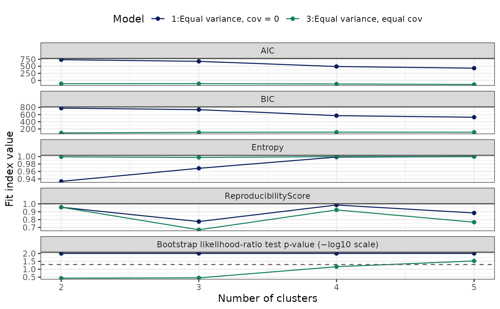

SOM + latent profile clustering pipeline (with AHP and distance baselines)
Source:R/Pipeline_SOMClust.R
CreateClusterModel_SOM_MClust.RdEnd-to-end pipeline to:
Standardize variables using SciDataReportR::CreateZScoreObject() or a supplied Z-score object.
Fit a Self-Organizing Map (SOM; kohonen) on complete cases.
Generate aweSOM visualizations (Circular, Line, Cloud) with optional relabeling using variable labels from the original data frame.
Cluster SOM codebook vectors using latent profile analysis (tidyLPA / mclust backend).
In
method = "exploratory", fit a grid of models and select a recommended solution using an Analytic Hierarchy Process (AHP)-style index combining AIC, BIC, and Entropy.In
method = "finalize", fit a user-specified model and number of profiles.Map node-level clusters and posterior probabilities back to individuals.
Store training variable summaries used later to quantify whether projected cohorts fall outside the original training range.
This supports a train once, project many clinical phenotyping workflow: learn phenotype structure in a training cohort, then project new cohorts into the fixed phenotype space without reclustering.
Ideal use: correlated continuous clinical or biomarker measures where a topology-preserving map is clinically informative before model-based profiles.
Missing data:
SOM and clustering are fit only on rows with complete Z-scores.
The returned
DataWithClustershas exactly the original rows and columns plus one cluster column; rows not used in SOM/LPA get NA.The returned
ProbFit$individualis also full length, preserving one row per input row with NA posterior probabilities for rows excluded from SOM/LPA.
Z-score behavior:
ZScoreType = "Center and Scale"/"Center Only"/"Scale Only"computes Z-scores fromdfviaCreateZScoreObject().ZScoreType = "ZScoreObj"projects Z-scores using an externalZScoreObjviaProjectZScore().ZScoreType = "PreZScored"uses existing Z-score columns indfas-is and does not re-zscore.
Readable SOM + Mclust workflow wrapper for
CreateClusterModel_SOM_MClust().
Compatibility wrapper for Pipeline_SOM_MClust().
Deprecated alias for CreateClusterModel_SOM_MClust().
Usage
CreateClusterModel_SOM_MClust(
data,
variables = NULL,
method = c("exploratory", "finalize", "explore"),
k_range = 2:10,
models = c(1, 2, 3),
final_k = NULL,
final_model = NULL,
ClusterVariableName = "Cluster",
ZScoreType = c("Center and Scale", "Center Only", "Scale Only", "ZScoreObj",
"PreZScored"),
ZScoreObject = NULL,
som_xdim = NULL,
som_ydim = NULL,
som_topo = "hexagonal",
som_neigh = "gaussian",
seed_som = 934521L,
seed_lpa = 93421L,
Relabel = TRUE,
ZScorePrefix = "Z_",
ZScoreVars = NULL,
id_var = NULL,
lpa_progress = FALSE,
lpa_em_itmax = 100L,
lpa_em_tol = 1e-05,
lpa_timeout_seconds = 120,
lpa_drop_zero_sd = TRUE,
lpa_zero_sd_tol = 1e-08,
skip_model_after_n_failures = 2L,
slow_fit_seconds = 120,
min_nodes_per_cluster = 5,
high_dist_quantile = 0.95,
low_prob_threshold = 0.7,
stability_resamples = 0L,
stability_seed = 934522L,
stability_progress = FALSE,
df = lifecycle::deprecated(),
id_col = lifecycle::deprecated(),
.NodeClusterFn = NULL
)
Pipeline_SOM_MClust(...)
Pipeline_SOMClust(...)
CreateSOMClusterModel(...)Arguments
- data
Data frame containing the variables to be used in SOM and clustering.
- variables
Optional character vector of variable names. If NULL, numeric variables are auto-detected using
SciDataReportR::getNumVars(df, Ordinal = FALSE). InZScoreType = "PreZScored", this can also be NULL if you supplyZScoreVarsor if Z-score columns can be auto-detected by prefix.- method
One of
"exploratory"(default) or"finalize". In"exploratory", a grid of models is fit and AHP chooses the recommended solution. In"finalize", the user must specifyfinal_kandfinal_model.- k_range
Integer vector of numbers of clusters/profiles to consider in exploratory mode. Default
2:10.- models
Integer vector of model specifications for tidyLPA (mclust backend). Default
c(1, 2, 3).- final_k
Integer; number of profiles for
method = "finalize".- final_model
Integer; model specification for
method = "finalize"(should be one ofmodels).- ClusterVariableName
Name of the cluster column in the output. Defaults to
"Cluster". If this column already exists indf, it is overwritten (with a message).- ZScoreType
One of:
"Center and Scale"(default)"Center Only""Scale Only""ZScoreObj"(use an existing ZScore object)"PreZScored"(use existing Z-score columns in df as-is)
- ZScoreObject
Optional ZScoreObj (from
CreateZScoreObject()orProjectZScore()) to use whenZScoreType = "ZScoreObj".- som_xdim, som_ydim
Optional integers for SOM grid dimensions. If NULL, a square grid with side length
ceiling(n_complete^(1/3))is used.- som_topo
SOM topology for
kohonen::somgrid(), default"hexagonal".- som_neigh
SOM neighbourhood function, default
"gaussian".- seed_som, seed_lpa
Integer seeds for SOM and LPA steps (defaults 934521 and 93421).
- Relabel
Logical; if TRUE (default), aweSOM plots are relabeled using variable labels from the original
df(via Hmisc or sjlabelled when available) by stripping the Z-score prefix.- ZScorePrefix
Character prefix used for Z-score columns when
ZScoreType = "PreZScored". Default"Z_".- ZScoreVars
Optional character vector of Z-score column names to use when
ZScoreType = "PreZScored". If NULL, the function attempts to infer them fromvariablesor by detecting columns starting withZScorePrefix.- id_var
Optional character scalar. If provided and present in
df, this column is carried intoProbFit$individualfor convenience.- lpa_progress
Logical; if TRUE, print short progress messages while fitting model/profile combinations.
- lpa_em_itmax
Integer; maximum number of EM iterations passed to
mclust::emControl(). Use NULL to leave mclust defaults unchanged.- lpa_em_tol
Numeric; EM convergence tolerance passed to
mclust::emControl(). Use NULL to leave mclust defaults unchanged.- lpa_timeout_seconds
Optional timeout in seconds for individual LPA fits. Use NULL to disable timeouts.
- lpa_drop_zero_sd
Logical; if TRUE, remove SOM code dimensions with near-zero standard deviation before LPA.
- lpa_zero_sd_tol
Numeric tolerance used when
lpa_drop_zero_sd = TRUE.- skip_model_after_n_failures
Optional integer; skip a model family after this many failures.
- slow_fit_seconds
Optional runtime threshold used to flag slow LPA fits in diagnostics.
- min_nodes_per_cluster
Optional minimum average SOM nodes per cluster considered before attempting a candidate profile count.
- high_dist_quantile
Numeric value between 0 and 1 used to define high SOM-distance flags from the training distance distribution. Default is
0.95.- low_prob_threshold
Numeric posterior probability threshold used to flag uncertain phenotype membership. Default is
0.70.- stability_resamples
Number of 80% participant subsample refits used to assess reproducibility for every successful exploratory candidate. Subsamples are drawn without replacement. Defaults to
0(disabled); use50for an exploratory stability screen.- stability_seed
Integer seed for participant subsampling.
- stability_progress
Logical; if TRUE, print subsample progress messages.
- df
Deprecated (since 19.15.0). Use
datainstead.- id_col
Deprecated (since 19.15.0). Use
id_varinstead.- .NodeClusterFn
Internal. A function taking the SOM codebook matrix and returning a list with a
node_clusterinteger vector (one label per SOM node) and, optionally,fit_table,ahp_best_row,recommendation,best_fit_name, andfit_plot. When supplied, the SOM codebook is clustered by that function and the latent-profile grid is not fitted. Used byCreateClusterModel_SOM_HDBSCAN(); not part of the user-facing API.- ...
Arguments passed to
CreateClusterModel_SOM_MClust().
Value
A list of class "Pipeline_SOM_MClust" with components:
method,vars_used,ZScoreType,ZScoreObject,ZScoreVars,ClusterVariableNameDataWithClusters: originaldfwith only the cluster column appendedfit_plot: ggplot of AIC/BIC/Entropy/BLRT p-value vs k and model (plus reproducibility when subsample stability is enabled)ModelInfo_SOM: list withsom_model,som_codes,som_grid,training_variable_summary,SOMFit(distance diagnostics, baselines, and per-cluster flags),plots(aweSOM plots)ModelInfo_MClust: list withlpa_models,fit_table,AHPinformation, anddiagnosticsfor LPA warnings, failures, runtimes, and preprocessingModelInfo_MClust$Stability: subsample replicate, cluster recovery, and summary tables whenstability_resamples > 0ProbFit: list withnode(node-level posterior probabilities),individual(full-length per-person mapping and probabilities), and probability plots
Details
ModelInfo_MClust$fit_table uses the fit indices returned by tidyLPA's
mclust backend. AIC, AWE, BIC, CAIC, CLC, KIC, SABIC, and ICL are
likelihood/information criteria, for which lower values are preferred when
comparing candidate fits estimated on the same data. Entropy summarizes
classification separation (higher is better). MinProfileNodeN and
MaxProfileNodeN are integer SOM-node counts in the smallest and largest
profile; the corresponding *Proportion fields divide those counts by the
total number of SOM nodes. BLRTStatistic and BLRTPValue compare a
k-profile model with k - 1 profiles under the same covariance model. A
small p-value supports the added profile's statistical fit, but does not
establish clinical meaning or reproducibility; it is unavailable for k = 1.
The raw BLRTPValue remains in the table. Its candidate-review panel
displays -log10(BLRTPValue) with a dashed 0.05 p-value
reference at -log10(0.05).
Lifecycle settings are intentionally strict: k_range and
models are exploratory-only, while final_k and
final_model are finalize-only. Supplying settings from both modes is
an error, even when an exploratory setting equals its default.
Stability is assessed by refitting the full SOM/LPA pipeline on independent
80% participant subsamples drawn without replacement.
StabilityARI_Mean is the mean adjusted Rand index across successful
refits and can be negative when agreement is worse than chance.
StabilityJaccard_Mean is the mean label-matched, per-profile Jaccard
recovery. ReproducibilityScore is the mean of their finite values;
StabilitySuccessRate is reported separately. Reproducibility_scaled is
the candidate-table min-max rescaling used only by the AHP index and is not
an independently interpretable reproducibility measure.
The AHP-style index is computed by:
Scaling AIC, BIC, and Entropy across candidate solutions (AIC/BIC are negated so that lower values correspond to better fit; higher scaled scores are preferred).
Taking the mean of the three scaled indices. The model with the highest AHP index is recommended.
LPA model/profile combinations are fit one at a time so that failed or
warning-producing solutions are captured in diagnostics instead of blocking
the entire pipeline. Successful fits are retained and failed fits are listed
in ModelInfo_MClust$diagnostics.
Model review and refinement
Start with ModelInfo_MClust$fit_table, the AHP recommendation, and
fit_plot to compare candidate model specifications and numbers of
profiles. AHP is a useful starting point, not an automatic final decision:
retain solutions whose fit, cluster size, and clinical interpretability are
all reasonable.
The Circular and Line SOM widgets show how the analysis variables vary across
the map; the Cloud widget shows the observations within map cells. Use them
to assess whether the candidate solution represents coherent, interpretable
phenotype patterns. Inspect SOMFit$node_occupancy for empty or sparse
cells, and the SOM-distance plots for clusters with systematically poor map
representation. The posterior-probability plots in ProbFit$plots
identify uncertain node- or individual-level assignments.
If these diagnostics suggest a weak solution, reconsider the variables, SOM
grid dimensions, model family, or candidate k range and refit in
exploratory mode. Once a solution is selected, refit it with
method = "finalize", final_k, and final_model to create
the reusable model for projection.
Set stability_resamples to a positive value to assess internal
reproducibility. Each 80% subsample refits the same candidate SOM/LPA solution
and projects the original participants back into it. Mean adjusted Rand
index summarizes whole-partition agreement; cluster-wise Jaccard recovery
identifies phenotypes that dissolve despite good overall agreement. This is
internal reproducibility, not independent-cohort validation.
Reviewing the candidates
Exploratory mode fits every combination of k and model family, so the
comparison is made once, on one table, rather than by refitting by hand.
ModelInfo_MClust$fit_table holds every candidate solution with its
information criteria, entropy, subsample reproducibility, and the combined
AHP index side by side.
A candidate missing from that table is never a mystery:
ModelInfo_MClust$diagnostics$lpa_fit_diagnostics records each fit's
status, runtime, warnings, and errors, so model families that fail to
converge or exceed the fit timeout show up there.
Once a solution is chosen, refit it on its own with method = "finalize" to
get the reusable, projectable model.
Stability output
Stability assesses internal reproducibility by full-pipeline 80% participant subsampling without replacement. For each replicate, 80% of complete participants are selected once, all preprocessing and any reduction (PCA, MCA, or SOM) are refit, the selected clustering method is refit, and the original complete training participants are projected into that subsample fit for comparison with the original fitted partition. It is an internal sensitivity analysis, not independent-cohort validation.
Stability$settings records the analysis provenance:
resamples: requested number of 80% subsample refits.seed: seed used to select subsamples.refit_scope: always"full_pipeline", meaning preprocessing, reduction where applicable, and clustering were all refit.resample_type:"subsample_without_replacement"for the primary stability analysis.resample_fraction: the retained participant fraction,0.80.coassignment_limit: maximum number of complete training participants (2,000) for which the full pairwise co-assignment matrix is calculated.noise_policy: whether the method has noise labels. For ordinary methods it is"all clusters included"; HDBSCAN variants retain noise in global partition metrics but exclude it from per-cluster inclusion and co-assignment summaries.
Stability$replicates has one row per requested refit. Model and
Classes identify the selected candidate (for HDBSCAN, Classes is the
data-derived extracted count); Replicate is its sequence number; Status
is "success" or a failure status; and Error contains the error message
for an unsuccessful refit. Successful rows contain these partition metrics:
ARI: adjusted Rand index, agreement corrected for chance; higher is better and can be negative when agreement is worse than chance.VI: variation of information, the information lost or gained when changing partitions; lower is better and zero is identical.NMI: normalized mutual information; higher is better and one is identical.FowlkesMallows: pairwise clustering agreement; higher is better and one is identical.
Stability$cluster_recovery has one row for each reference Cluster in
each successful Replicate. Jaccard is the recovery of that reference
cluster after matching it to the subsample cluster with the largest Jaccard
overlap; higher is better and one is exact recovery. Model and Classes
again identify the fitted candidate.
Stability$summary combines successful subsample refits:
StabilitySuccessRate is successful refits divided by requested refits, an
operational reliability measure that does not enter the reproducibility
score. StabilityARI_Mean and StabilityARI_P05 are the mean and fifth
percentile of ARI. StabilityJaccard_Mean and StabilityJaccard_Min are
respectively the mean and minimum label-matched Jaccard recovery.
ReproducibilityScore is the mean of the finite StabilityARI_Mean and
StabilityJaccard_Mean values only; it does not include success rate, VI,
NMI, or Fowlkes–Mallows.
Stability$failures repeats the replicate columns for unsuccessful refits,
making fit failures auditable without mixing them with successful metrics.
Stability$participant_inclusion is one row per complete reference
participant. RowIndex identifies its original row position, Cluster its
reference assignment, SuccessfulRefits the number of usable refits, and
InclusionProbability the proportion of those refits in which the
participant returned to that cluster's label-matched subsample cluster.
Model and Classes identify the candidate. Higher inclusion is better.
Stability$cluster_inclusion summarizes inclusion within each reference
Cluster: MeanInclusion, P05Inclusion, and MinInclusion are the mean,
fifth percentile, and minimum participant inclusion probabilities; Model
and Classes identify the candidate. Higher values indicate that all, not
only the average, of a cluster is recovered consistently.
Stability$coassignment is available only when the complete training cohort
has at most coassignment_limit participants. Each candidate entry has a
status of "available", "skipped", or "not_available"; reason
explains a non-available result; matrix is the pairwise probability that
two complete reference participants are assigned together across successful
subsample refits; and row_ids maps matrix rows and columns to original training-row
positions. Higher matrix values mean more consistent pairwise co-membership.
Where more than one candidate is summarized, entries are named by its
Model_Classes key. The matrix is diagnostic only and is never used for
selection.
Stability$plots contains cluster_recovery (per-cluster Jaccard),
partition_metrics (ARI, VI, NMI, and Fowlkes–Mallows distributions), and
cluster_inclusion; it also contains a co-assignment heatmap when the
matrix is available. These diagnostics complement rather than replace ARI
and Jaccard: none can turn a poorly reproducible cluster into a stable
phenotype.
Metric sources: Hubert and Arabie (1985) define ARI; Jaccard (1901) defines the overlap coefficient; Meila (2005) defines VI; Strehl and Ghosh (2002) describe NMI for partition comparison; Fowlkes and Mallows (1983) define their pairwise index; and Monti et al. (2003) describe resampling-based consensus co-assignment.
References
Saaty TL. The Analytic Hierarchy Process. McGraw-Hill, 1980. Kohonen T. Self-organized formation of topologically correct feature maps. Biological Cybernetics. 1982;43:59-69. Scrucca L, Fop M, Murphy TB, Raftery AE. mclust 5. J Stat Softw. 2016;71(11):1-29. Celeux G, Soromenho G. An entropy criterion for assessing the number of clusters in a mixture model. J Classification. 1996;13:195-212. Cavanaugh JE. A large-sample model selection criterion based on Kullback's symmetric divergence. Stat Methodol. 1999;61:165-180. Sclove SL. Application of model-selection criteria to some problems in multivariate analysis. Psychometrika. 1987;52:333-343. Nylund KL, Asparouhov T, Muthen BO. Deciding on the number of classes in latent class analysis and growth mixture modeling. Struct Equ Modeling. 2007;14:535-569. Akogul S, Erisoglu M. An approach for determining the number of clusters in a model-based cluster analysis. Entropy. 2017;19:452.
Examples
# \donttest{
data("SimulatedPhenotypeData")
df_Training <- dplyr::filter(SimulatedPhenotypeData, .data$Cohort == "Training")
vars_Numeric <- paste0("Var", 1:12)
# Example-only display helper (not exported by SciDataReportR): round the
# numeric columns and add a frozen header.
ShowFitTable <- function(x, height = "320px") {
x <- dplyr::mutate(
dplyr::as_tibble(x),
dplyr::across(dplyr::where(is.numeric), \(v) round(v, 3))
)
htmltools::browsable(htmltools::HTML(as.character(
FreezeTableHeader(x, height = height, full_width = TRUE)
)))
}
# Exploratory mode: every combination of k and model family. Model 2 is
# omitted here because it is the slowest to fit and, on this data, reaches
# the fit timeout at every k without contributing a candidate.
review <- CreateClusterModel_SOM_MClust(
data = df_Training,
variables = vars_Numeric,
method = "exploratory",
k_range = 2:5,
models = c(1, 3),
som_xdim = 5,
som_ydim = 5,
stability_resamples = 2,
stability_seed = 20260805,
Relabel = FALSE,
min_nodes_per_cluster = NULL
)
# Every candidate solution
ShowFitTable(review$ModelInfo_MClust$fit_table)
Model
Classes
LogLik
parameters
n
AIC
AWE
BIC
CAIC
CLC
KIC
SABIC
ICL
Entropy
prob_min
prob_max
BLRTStatistic
BLRTPValue
MinProfileNodeN
MaxProfileNodeN
MinProfileNodeProportion
MaxProfileNodeProportion
StabilitySuccessRate
StabilityARI_Mean
StabilityARI_P05
StabilityJaccard_Mean
StabilityJaccard_Min
ReproducibilityScore
AIC_scaled
BIC_scaled
Entropy_scaled
Reproducibility_scaled
ahp_index
1
2
-329.586
37
25
733.172
1006.502
778.270
815.270
661.038
773.172
663.530
-779.132
0.933
0.930
0.999
54.520
0.010
5
20
0.20
0.80
1
0.947
0.900
0.967
0.950
0.957
-1.291
-1.315
-2.217
0.809
-1.004
3
2
228.125
169
25
-118.249
1136.732
87.741
256.741
-454.251
53.751
-436.344
-87.744
0.999
1.000
1.000
23.218
0.376
4
21
0.16
0.84
1
0.947
0.900
0.967
0.950
0.957
0.885
0.951
0.500
0.809
0.786
1
3
-287.806
50
25
675.613
1045.563
736.556
786.556
577.549
728.613
581.502
-737.075
0.968
0.958
0.999
83.559
0.010
5
15
0.20
0.60
1
0.722
0.481
0.828
0.745
0.775
-1.144
-1.178
-0.769
-0.790
-0.970
3
3
240.315
182
25
-116.630
1235.046
105.205
287.205
-478.635
68.370
-459.194
-105.227
0.998
0.998
1.000
24.381
0.356
4
17
0.16
0.68
1
0.637
0.407
0.703
0.678
0.670
0.881
0.893
0.434
-1.709
0.125
1
4
-182.881
63
25
491.761
958.343
568.551
631.551
367.758
557.761
373.182
-568.566
0.999
0.999
1.000
209.851
0.010
5
8
0.20
0.32
1
0.983
0.976
0.988
0.975
0.985
-0.674
-0.627
0.470
1.058
0.057
3
4
258.702
195
25
-127.404
1320.957
110.276
305.276
-515.405
70.596
-494.437
-110.278
1.000
1.000
1.000
36.774
0.069
4
9
0.16
0.36
1
0.911
0.904
0.934
0.894
0.923
0.909
0.877
0.525
0.509
0.705
1
5
-140.289
76
25
432.579
995.848
525.213
601.213
282.579
511.579
289.530
-525.214
1.000
1.000
1.000
85.183
0.010
4
7
0.16
0.28
1
0.979
0.975
0.790
0.012
0.885
-0.523
-0.485
0.529
0.173
-0.076
3
5
280.916
208
25
-145.833
1399.220
107.694
315.694
-559.833
65.167
-537.334
-107.694
1.000
1.000
1.000
44.428
0.030
3
8
0.12
0.32
1
0.813
0.794
0.722
0.233
0.767
0.956
0.885
0.528
-0.858
0.377
# Status, runtime, warnings, and errors for every attempted fit
ShowFitTable(
review$ModelInfo_MClust$diagnostics$lpa_fit_diagnostics,
height = "260px"
)
Model
Classes
status
runtime_seconds
slow_fit
n_warnings
warnings
error
1
2
success
0.333
FALSE
0
NA
3
2
success
0.628
FALSE
0
NA
1
3
success
0.579
FALSE
0
NA
3
3
success
1.127
FALSE
0
NA
1
4
success
0.862
FALSE
0
NA
3
4
success
1.689
FALSE
0
NA
1
5
success
1.625
FALSE
0
NA
3
5
success
2.648
FALSE
0
NA
review$ModelInfo_MClust$AHP$recommendation
#> [1] "AHP (AIC, BIC, Entropy, reproducibility) recommends Model 3 with k = 2 profiles."
ShowFitTable(review$Stability$summary, height = "260px")
Model
Classes
StabilitySuccessRate
StabilityARI_Mean
StabilityARI_P05
StabilityJaccard_Mean
StabilityJaccard_Min
ReproducibilityScore
1
2
1
0.947
0.900
0.967
0.950
0.957
3
2
1
0.947
0.900
0.967
0.950
0.957
1
3
1
0.722
0.481
0.828
0.745
0.775
3
3
1
0.637
0.407
0.703
0.678
0.670
1
4
1
0.983
0.976
0.988
0.975
0.985
3
4
1
0.911
0.904
0.934
0.894
0.923
1
5
1
0.979
0.975
0.790
0.012
0.885
3
5
1
0.813
0.794
0.722
0.233
0.767
review$fit_plot

review$fit_plot
 # Refit the chosen solution to get the projectable model
model <- CreateClusterModel_SOM_MClust(
data = df_Training, variables = vars_Numeric, method = "finalize",
final_k = 4, final_model = 1, som_xdim = 5, som_ydim = 5,
stability_resamples = 2, Relabel = FALSE,
min_nodes_per_cluster = NULL
)
ShowFitTable(model$ModelInfo_MClust$fit_table, height = "160px")
# Refit the chosen solution to get the projectable model
model <- CreateClusterModel_SOM_MClust(
data = df_Training, variables = vars_Numeric, method = "finalize",
final_k = 4, final_model = 1, som_xdim = 5, som_ydim = 5,
stability_resamples = 2, Relabel = FALSE,
min_nodes_per_cluster = NULL
)
ShowFitTable(model$ModelInfo_MClust$fit_table, height = "160px")
Model
Classes
LogLik
parameters
n
AIC
AWE
BIC
CAIC
CLC
KIC
SABIC
ICL
Entropy
prob_min
prob_max
BLRTStatistic
BLRTPValue
MinProfileNodeN
MaxProfileNodeN
MinProfileNodeProportion
MaxProfileNodeProportion
StabilitySuccessRate
StabilityARI_Mean
StabilityARI_P05
StabilityJaccard_Mean
StabilityJaccard_Min
ReproducibilityScore
AIC_scaled
BIC_scaled
Entropy_scaled
Reproducibility_scaled
ahp_index
1
4
-182.881
63
25
491.761
958.343
568.551
631.551
367.758
557.761
373.182
-568.566
0.999
0.999
1
209.851
0.01
5
8
0.2
0.32
1
0.983
0.976
0.988
0.975
0.985
0
0
0
0
0
# }